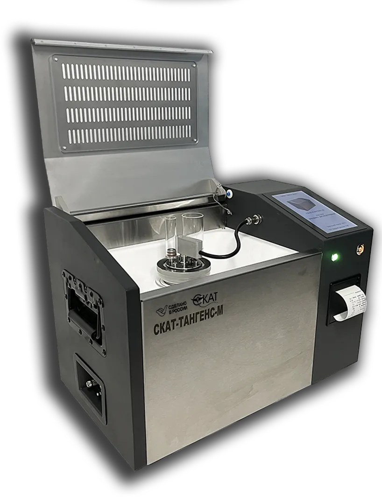

Transformer Oil & Liquid Dielectrics
SKAT-TANGENS-M Liquid Dielectric Tester
Precision measurement of dielectric loss factor (tan δ) and relative permittivity.
Fully compliant with IEC 60247 and GOST 6581-75, the SKAT-TANGENS-M is a microprocessor-controlled laboratory instrument designed for the quality control of insulating oils and other liquid dielectrics. It provides fully automatic measurement of tan δ and capacitance with advanced digital harmonic analysis.
About the product
The SKAT-TANGENS-M is a sophisticated, microprocessor-controlled instrument designed for the precise measurement of the dielectric loss factor (tan δ) and relative permittivity of insulating liquids. It fully complies with the requirements of GOST R IEC 60247-2013 (IEC 60247), ensuring reliable and standardized quality control of transformer oils and other liquid dielectrics used in power equipment.
The tester utilizes a three-terminal measuring cell made of stainless steel, with a 2 mm gap between electrodes as specified by international standards. The measurement process is fully automatic, employing digital harmonic analysis for high accuracy. The built-in induction heating system allows for precise temperature control from 40 °C to 110 °C, enabling the analysis of temperature-dependent dielectric properties.
The instrument features a 7\" IPS color touchscreen for intuitive operation, internal memory for up to 250 test results, and a built-in thermal printer for immediate documentation. For safety, high voltage application is automatically blocked when the protective lid is open.
SKAT-TANGENS-M: Product Overview
A general overview of the instrument's key features and capabilities.
Product documents
Related products

Technical specifications
Note: Specifications are subject to change without notice. For custom ranges and configurations, please contact our sales team.
FAQ
Interpreting test results
International standards specify interpretation of results and recommended action. For detailed guidance, refer to:
- IEC 60296
- IEC 60422
- IEEE C57.106
Troubleshooting & Software updates
- „ПУСК” button is not available: Check if the measuring electrode or the coaxial adapter cable is disconnected, or if the protective lid is open.
- Temperature readings show „----”: The temperature sensor may not be connected. Verify the electrode and coaxial cable connections.
- Error during measurement: Refer to Table 6 in the user manual for error codes. Common issues include foreign objects in the electrode gap (Error 2, 3) or a faulty capacitor (Error 4).
Application and academic support
For detailed application notes, technical guides, and academic resources on insulating oil testing, please refer to the knowledge base on our website or contact our technical support team.
Contact Support